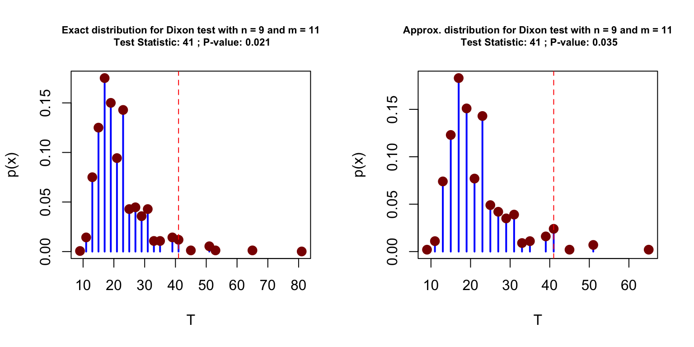
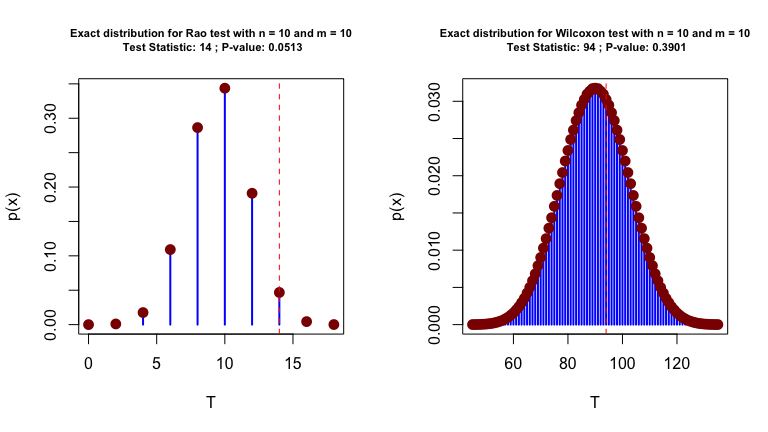

This package implements various nonparametric methods for testing whether two circular samples come from the same population and allows to obtain its associated small-sample distribution. In particular, the following test are considered:
-
dixon: for Dixon test, -
rao: for Rao test, -
ww: for Wheeler-Watson, -
wilcox: for Wilcoxon test, -
vdwfor van der Waerden test, -
savagefor Savage test.
The code below presents a simple example with the pigeons dataset of Schmidt-Koenig (1958).
# Load dataset
data(pigeons)
# Dixon test (exact pvalue)
circular_test(pigeons$experimental, pigeons$control)
#>
#> Dixon Two Sample Test
#>
#> Data: pigeons$experimental and pigeons$control
#> Test Statistic: 41
#> Exact P-value: 0.02096
#> Bracketing Points and Pair of Signif. Levels:
#> c1 = 33 (p1 = 0.0567)
#> c2 = 35 (p2 = 0.0460)
# Dixon test (approximated pvalue)
circular_test( pigeons$experimental, pigeons$control, type = "mc")
#>
#> Dixon Two Sample Test
#>
#> Data: pigeons$experimental and pigeons$control
#> Test Statistic: 41
#> Approx. P-value: 0.0227
#> based on 10000 Monte-Carlo replicationsIt is also possible to compare the exact distribution of the test statistic under \(H_0\) to the one obtained by simulations. This can be done as follows:
par(mfrow = c(2,2))
plot(circular_test(pigeons$experimental, pigeons$control), cex.main = 0.7)
plot(circular_test(pigeons$experimental, pigeons$control, type = "mc", B = 10^2), cex.main = 0.7)
plot(circular_test(pigeons$experimental, pigeons$control, type = "mc", B = 10^4), cex.main = 0.7)
plot(circular_test(pigeons$experimental, pigeons$control, type = "mc", B = 10^6), cex.main = 0.7)
It is also possible to vizualize the (exact or approximated) distirbution of the test statistics under \(H_0\). This illustrated with Rao and Wheeler-Watson tests on the same dataset.
test_rao = circular_test(pigeons$control, pigeons$experimental, test = "rao")
test_rao
#>
#> Rao Two Sample Test
#>
#> Data: pigeons$control and pigeons$experimental
#> Test Statistic: 14
#> Exact P-value: 0.05126
#> Bracketing Points and Pair of Signif. Levels:
#> c1 = 14 (p1 = 0.0513)
#> c2 = 16 (p2 = 0.0045)
par(mfrow = c(1,2))
plot(test_rao, cex.main = 0.7)
test_ww = circular_test(pigeons$control, pigeons$experimental, test = "ww")
test_ww
#>
#> Wheeler-Watson Two Sample Test
#>
#> Data: pigeons$control and pigeons$experimental
#> Test Statistic: 19.51057
#> Exact P-value: 0.02121
#> Bracketing Points and Pair of Signif. Levels:
#> c1 = 15.2764 (p1 = 0.0502)
#> c2 = 15.3914 (p2 = 0.0494)
plot(test_ww, cex.main = 0.7)
Install Instructions
To install the circTest package, there is currently one option: GitHub.